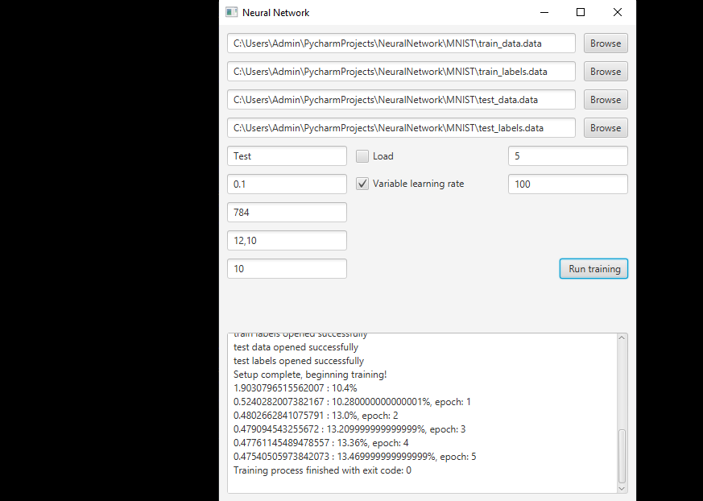

Dense Neural Network Creator
Here is the main class of the network, loading a default network, or if provided, creating one from parameters provided by the user.
from Network import Network
from Coach import Coach
from DataLoader import DataLoader
from ParametersHandler import ParametersHandler
import sys
if len(sys.argv) == 1:
network = Network("MNIST#7", False, 0.1, 784, [12], 10)
data_loader = DataLoader("MNIST/train_data.data", "MNIST/train_labels.data",
"MNIST/test_data.data", "MNIST/test_labels.data")
coach = Coach(network, data_loader, True)
coach.train(50, 100)
sys.exit(0)
args = sys.argv[5:15]
ph = ParametersHandler(args)
network = Network(ph.name, ph.load, ph.learning_rate, ph.input_size, ph.h_layers, ph.output_size)
data_loader = DataLoader(sys.argv[1], sys.argv[2], sys.argv[3], sys.argv[4])
coach = Coach(network, data_loader, ph.variable_learning_rate)
print("Setup complete, beginning training!", flush=True)
coach.train(ph.epochs, ph.samples_per_epoch)
sys.exit(0)
Here is the part of the coach class responsible for managing the learning process, along with adjusting the learning rate to avoid getting stuck in local minimums and provide optimal learning time.
def train(self, epochs, samples_per_pass):
cost = self.calculate_cost()
print("Initial values" + " - " +
"loss: " + str(round(cost, 15)) + ' - ' +
"accuracy: " + str(round(self.calculate_accuracy(), 2)) + '%', flush=True)
samples_left = [x for x in range(len(self.train_data))]
for i in range(epochs):
for j in range(samples_per_pass):
choices = len(samples_left)
if choices == 0:
samples_left = [x for x in range(len(self.train_data))]
choices = len(samples_left)
index = random.randint(0, choices-1)
sample_id = samples_left[index]
samples_left.pop(index)
self.network.backpropagation(self.train_data[sample_id], self.train_labels[sample_id])
if self.variable_learning_rate:
self.network.apply_gradient(1)
new_cost = self.calculate_cost()
if new_cost < cost:
self.network.learning_rate = self.network.learning_rate * 1.05
else:
print("Decreasing learning rate", flush=True)
while new_cost > cost:
self.network.apply_gradient(-1)
self.network.learning_rate = self.network.learning_rate * 0.8
self.network.apply_gradient(1)
new_cost = self.calculate_cost()
self.network.clear_gradient()
cost = new_cost
print("Epoch: " + str(i + 1) + "/" + str(epochs) + " - " +
"loss: " + str(round(cost, 15)) + ' - ' +
"accuracy: " + str(round(self.calculate_accuracy(), 2)) + '%', flush=True)
else:
self.network.apply_gradient(1)
self.network.clear_gradient()
cost = self.calculate_cost()
print("Epoch: " + str(i+1) + "/" + str(epochs) + " - " +
"loss: " + str(round(cost, 15)) + ' - ' +
"accuracy: " + str(round(self.calculate_accuracy(), 2)) + '%', flush=True)
save_to_file(self.network)